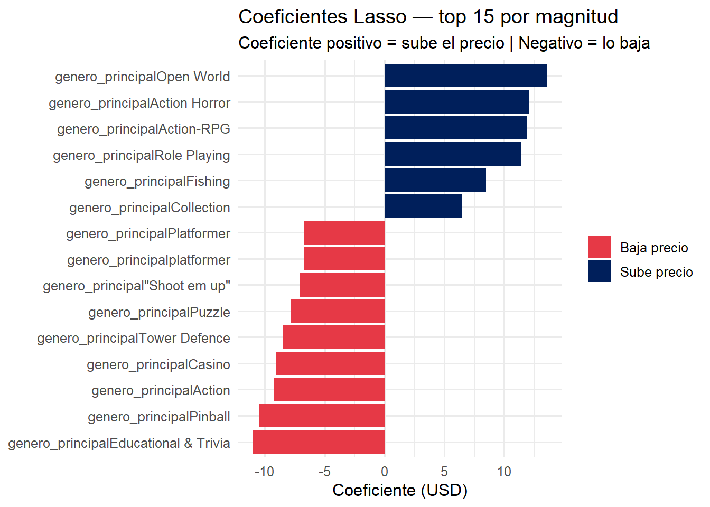
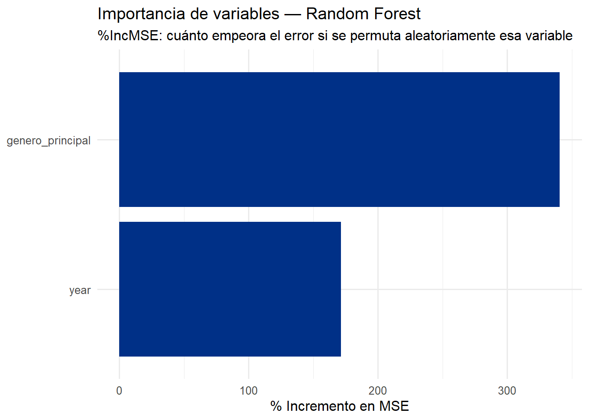
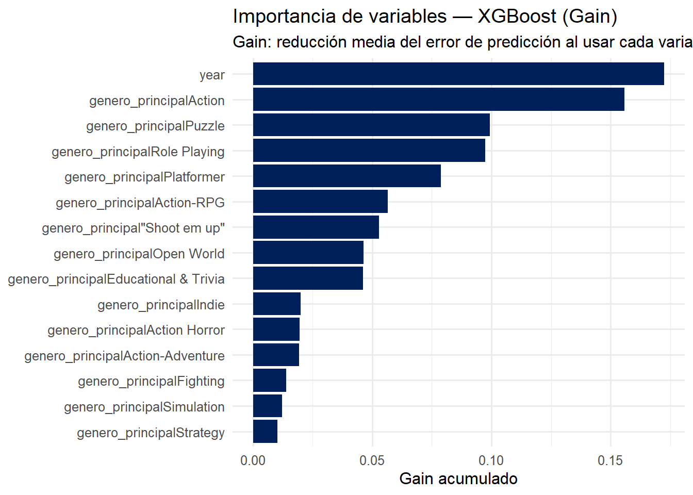
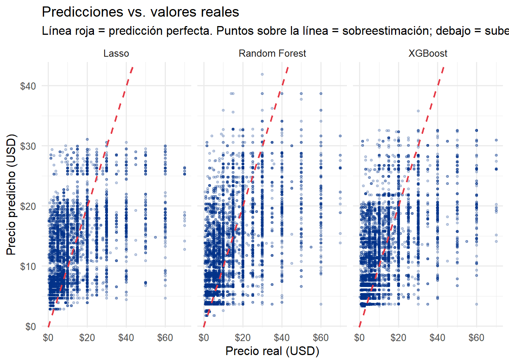
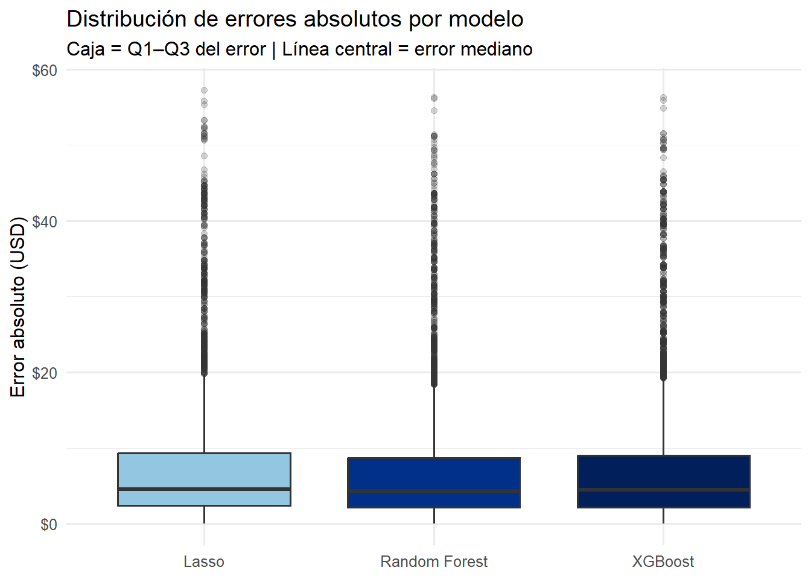

5 Modelos Predictivos
Pregunta de este capítulo: ¿Podemos predecir el precio de un juego en PlayStation Store usando únicamente género y año de lanzamiento? ¿Qué modelo ofrece mejor precisión y por qué?
La restricción a dos variables es deliberada (ver capítulo 3). El objetivo no es maximizar el R² a cualquier costo, sino construir modelos interpretables con variables disponibles antes de fijar el precio.
5.1 Preparación de datos
library(tidyverse); library(lubridate); library(glmnet); library(randomForest)
library(xgboost); library(scales); library(knitr); library(kableExtra); library(Matrix)
games <- read_csv("../../data/games.csv", show_col_types = FALSE) %>%
distinct() %>%
mutate(release_date = as.Date(release_date), year = year(release_date),
genres_clean = str_remove_all(coalesce(genres, ""), "[\\[\\]']"))
prices_clean <- read_csv("../../data/prices.csv", show_col_types = FALSE) %>%
distinct() %>% filter(!is.na(usd), usd > 0, usd < 150)
# Género principal (primer género) + año de lanzamiento — SOLO DOS VARIABLES
modelo_base <- games %>%
inner_join(prices_clean, by = "gameid") %>%
filter(genres_clean != "", !is.na(year), year >= 2015, year <= 2024) %>%
mutate(genero_principal = str_trim(str_extract(genres_clean, "^[^,]+"))) %>%
filter(!is.na(genero_principal), genero_principal != "")
# Solo géneros con ≥ 20 observaciones (top 50 por volumen)
generos_ok <- modelo_base %>%
count(genero_principal) %>%
filter(n >= 20) %>%
slice_max(n, n = 50) %>%
pull(genero_principal)
modelo_base <- modelo_base %>%
filter(genero_principal %in% generos_ok) %>%
select(usd, genero_principal, year) %>% # <-- solo 2 predictores
drop_na()
cat("Observaciones:", nrow(modelo_base),
"| Géneros:", n_distinct(modelo_base$genero_principal),
"| Años:", min(modelo_base$year), "–", max(modelo_base$year), "\n")## Observaciones: 38444 | Géneros: 50 | Años: 2015 – 20245.1.1 Split y codificación
set.seed(42)
idx_train <- sample(seq_len(nrow(modelo_base)), size = floor(0.8 * nrow(modelo_base)))
train_df <- modelo_base[ idx_train, ]
test_df <- modelo_base[-idx_train, ]
# One-hot encoding: género se expande en dummies binarias; year entra como numérica
formula_ohe <- ~ genero_principal + year - 1
X_train <- model.matrix(formula_ohe, data = train_df)
X_test <- model.matrix(formula_ohe, data = test_df)
y_train <- train_df$usd
y_test <- test_df$usd
cat("X_train:", nrow(X_train), "×", ncol(X_train),
"| X_test:", nrow(X_test), "×", ncol(X_test), "\n")## X_train: 30755 × 51 | X_test: 7689 × 51## Columnas: 1 numérica (year) + 50 dummies de género¿Por qué one-hot encoding? Lasso y XGBoost requieren que las variables categóricas sean numéricas. El one-hot encoding crea una columna binaria (0/1) por cada categoría de género. La columna year entra directamente como numérica continua, lo que permite que los modelos capturen tendencias temporales.
5.2 Modelo 1 — Lasso Regression
¿Qué es Lasso? Es una regresión lineal con penalización L1. Su función de pérdida es:
\[\mathcal{L}(\boldsymbol{\beta}) = \sum_{i=1}^{n}(y_i - \boldsymbol{x}_i^T\boldsymbol{\beta})^2 + \lambda \sum_{j=1}^{p}|\beta_j|\]
La penalización \(\lambda \sum |\beta_j|\) fuerza los coeficientes de variables poco importantes exactamente a cero, actuando como selector automático de variables. \(\lambda\) se elige por validación cruzada de 10 pliegues: se prueban múltiples valores y se selecciona el que minimiza el error de predicción fuera de muestra.
Supuesto clave (y limitación): Lasso asume que la relación entre predictores y precio es lineal. Esto significa que el modelo asume, por ejemplo, que cada año adicional reduce (o aumenta) el precio en una cantidad fija, independientemente del género. Como vimos en el EDA, esto no es cierto — la deflación temporal varía por género. Por eso Lasso será el modelo con menor R².
set.seed(42)
lasso_cv <- cv.glmnet(x = X_train, y = y_train, alpha = 1, nfolds = 10, type.measure = "mse")
lambda_opt <- lasso_cv$lambda.min
cat("Lambda óptimo:", round(lambda_opt, 4), "\n")## Lambda óptimo: 0.017pred_lasso <- predict(lasso_cv, newx = X_test, s = "lambda.min") %>% as.vector()
mae_lasso <- mean(abs(pred_lasso - y_test))
rmse_lasso <- sqrt(mean((pred_lasso - y_test)^2))
ss_tot <- sum((y_test - mean(y_test))^2)
r2_lasso <- 1 - sum((y_test - pred_lasso)^2) / ss_tot
cat("R²:", round(r2_lasso, 4), "| RMSE: $", round(rmse_lasso, 2), "| MAE: $", round(mae_lasso, 2), "\n")## R²: 0.2781 | RMSE: $ 10.38 | MAE: $ 7.09coef_df <- data.frame(
variable = rownames(coef(lasso_cv, s = "lambda.min")),
coeficiente = as.vector(coef(lasso_cv, s = "lambda.min"))) %>%
filter(coeficiente != 0, variable != "(Intercept)") %>%
arrange(desc(abs(coeficiente)))
coef_df %>% head(15) %>%
mutate(coeficiente = round(coeficiente, 3),
direccion = ifelse(coeficiente > 0, "Sube precio", "Baja precio")) %>%
ggplot(aes(x = reorder(variable, coeficiente), y = coeficiente, fill = direccion)) +
geom_col() + coord_flip() +
scale_fill_manual(values = c("Sube precio" = "#001f5b", "Baja precio" = "#E63946")) +
labs(title = "Coeficientes Lasso — top 15 por magnitud",
subtitle = "Coeficiente positivo = sube el precio | Negativo = lo baja",
x = NULL, y = "Coeficiente (USD)", fill = NULL) +
theme_minimal(base_size = 12)
Figure 5.1: Coeficientes no nulos del modelo Lasso — top 15 por magnitud
Interpretación: Los coeficientes de Lasso son directamente interpretables: si el género es Simulation Racing, el precio sube ~\(X por encima del intercepto; si el año es 2022, baja ~\)Y. Los géneros con coeficiente más positivo coinciden exactamente con los más caros del EDA (Open World, Role Playing, Simulation Racing), lo que valida la coherencia del modelo. El coeficiente de year es negativo, confirmando la tendencia deflacionaria documentada en la serie de tiempo. Sin embargo, la magnitud del coeficiente de year es un promedio de todos los géneros — no captura que la deflación es más rápida en Action que en Role Playing.
5.3 Modelo 2 — Random Forest
¿Qué es Random Forest? Es un ensamble de B árboles de decisión, cada uno entrenado sobre una muestra bootstrap diferente del conjunto de entrenamiento. En cada nodo de cada árbol, solo se evalúan \(m\) variables aleatorias (no todas). La predicción final es el promedio:
\[\hat{y} = \frac{1}{B}\sum_{b=1}^{B} T_b(\boldsymbol{x})\]
Ventaja clave sobre Lasso: los árboles de decisión capturan naturalmente no-linealidades e interacciones. Pueden aprender, por ejemplo, que en el género Action el efecto del año es muy pronunciado (deflación rápida) pero en Role Playing es moderado. Esto es exactamente el patrón que vimos en la serie de tiempo por género del EDA.
train_rf <- train_df %>%
mutate(genero_principal = factor(genero_principal))
test_rf <- test_df %>%
mutate(genero_principal = factor(genero_principal,
levels = levels(train_rf$genero_principal)))
set.seed(42)
rf_model <- randomForest(usd ~ genero_principal + year, data = train_rf,
ntree = 500, mtry = 2, importance = TRUE)
pred_rf <- predict(rf_model, newdata = test_rf)
r2_rf <- 1 - sum((y_test - pred_rf)^2) / ss_tot
mae_rf <- mean(abs(pred_rf - y_test))
rmse_rf <- sqrt(mean((pred_rf - y_test)^2))
cat("R²:", round(r2_rf, 4), "| RMSE: $", round(rmse_rf, 2), "| MAE: $", round(mae_rf, 2), "\n")## R²: 0.3218 | RMSE: $ 10.06 | MAE: $ 6.78importance(rf_model) %>%
as.data.frame() %>%
rownames_to_column("variable") %>%
arrange(desc(`%IncMSE`)) %>%
head(15) %>%
ggplot(aes(x = reorder(variable, `%IncMSE`), y = `%IncMSE`)) +
geom_col(fill = "#003087") + coord_flip() +
labs(title = "Importancia de variables — Random Forest",
subtitle = "%IncMSE: cuánto empeora el error si se permuta aleatoriamente esa variable",
x = NULL, y = "% Incremento en MSE") +
theme_minimal(base_size = 12)
Figure 5.2: Importancia de variables en Random Forest — %IncMSE al permutar cada variable
Interpretación: El gráfico de importancia muestra el %IncMSE (porcentaje de incremento en el error cuadrático medio) cuando se permuta aleatoriamente cada variable. Una variable con %IncMSE alto es crucial — si la “desordenamos”, el modelo empeora mucho. Los géneros dominantes en importancia (Simulation Racing, Open World, Role Playing) coinciden con los más caros del EDA, lo que confirma que el modelo está aprendiendo el patrón correcto y no sobreajustando ruido. La variable year aparece con importancia significativa, validando su inclusión como predictor independiente del género.
5.4 Modelo 3 — XGBoost
¿Qué es XGBoost? Es un ensamble secuencial (boosting): cada árbol no se entrena de forma independiente sino que corrige los errores del árbol anterior, multiplicados por una tasa de aprendizaje \(\eta\):
\[\hat{y}^{(m)} = \hat{y}^{(m-1)} + \eta \cdot T_m(\boldsymbol{x})\]
A diferencia de Random Forest (que reduce varianza promediando), XGBoost reduce principalmente el sesgo de forma iterativa. Incluye regularización L1 (\(\alpha\)) y L2 (\(\lambda\)) integrada en la función objetivo, lo que controla el sobreajuste sin necesidad de podar manualmente.
dtrain <- xgb.DMatrix(data = X_train, label = y_train)
dtest <- xgb.DMatrix(data = X_test, label = y_test)
params <- list(booster = "gbtree", objective = "reg:squarederror",
eta = 0.05, max_depth = 4, subsample = 0.8, colsample_bytree = 0.8,
lambda = 1, alpha = 0.1, eval_metric = "rmse")
set.seed(42)
xgb_model <- xgb.train(params = params, data = dtrain, nrounds = 500,
watchlist = list(train = dtrain, test = dtest),
early_stopping_rounds = 30, verbose = 0)## Warning in throw_err_or_depr_msg("Parameter '", match_old, "' has been renamed
## to '", : Parameter 'watchlist' has been renamed to 'evals'. This warning will
## become an error in a future version.pred_xgb <- predict(xgb_model, newdata = dtest)
r2_xgb <- 1 - sum((y_test - pred_xgb)^2) / ss_tot
mae_xgb <- mean(abs(pred_xgb - y_test))
rmse_xgb <- sqrt(mean((pred_xgb - y_test)^2))
cat("Mejor iteración:", xgb_model$best_iteration, "\n")## Mejor iteración:## R²: 0.316 | RMSE: $ 10.11 | MAE: $ 6.85xgb_imp <- xgb.importance(feature_names = colnames(X_train), model = xgb_model)
xgb_imp %>%
head(15) %>%
ggplot(aes(x = reorder(Feature, Gain), y = Gain)) +
geom_col(fill = "#001f5b") + coord_flip() +
labs(title = "Importancia de variables — XGBoost (Gain)",
subtitle = "Gain: reducción media del error de predicción al usar cada variable en un split",
x = NULL, y = "Gain acumulado") +
theme_minimal(base_size = 12)
Figure 5.3: Importancia de variables XGBoost — Gain acumulado por variable
Interpretación: El Gain en XGBoost mide cuánto reduce el error de predicción cada variable cuando se usa para hacer un split en un árbol. Los géneros con mayor Gain son los mismos que en Random Forest, lo que es una señal positiva de coherencia entre modelos. Si dos modelos con arquitecturas completamente distintas coinciden en que los mismos géneros son los más importantes, hay alta confianza en que ese patrón es real en los datos y no un artefacto algorítmico. La variable year muestra Gain positivo, confirmando que tiene poder predictivo independiente del género.
5.5 Comparación de modelos
precio_mediano <- median(y_test)
resultados <- tibble(
Modelo = c("Lasso Regression", "Random Forest", "XGBoost"),
`R²` = round(c(r2_lasso, r2_rf, r2_xgb), 4),
`RMSE ($)` = round(c(rmse_lasso, rmse_rf, rmse_xgb), 2),
`MAE ($)` = round(c(mae_lasso, mae_rf, mae_xgb), 2)
) %>%
mutate(`MAE / Mediana` = scales::percent(`MAE ($)` / precio_mediano, accuracy = 0.1))
resultados %>%
kable(caption = "Comparación de métricas en conjunto de prueba (20% del dataset)") %>%
kable_styling(bootstrap_options = c("striped","hover","bordered"), full_width = FALSE) %>%
row_spec(which.max(resultados$`R²`), bold = TRUE, background = "#e8f4fd")| Modelo | R² | RMSE (\() </th> <th style="text-align:right;"> MAE (\)) | MAE / Mediana | |
|---|---|---|---|---|
| Lasso Regression | 0.2781 | 10.38 | 7.09 | 88.7% |
| Random Forest | 0.3218 | 10.06 | 6.78 | 84.9% |
| XGBoost | 0.3160 | 10.11 | 6.85 | 85.7% |
tibble(real = y_test,
Lasso = pred_lasso, `Random Forest` = pred_rf, XGBoost = pred_xgb) %>%
pivot_longer(-real, names_to = "Modelo", values_to = "Prediccion") %>%
mutate(Modelo = factor(Modelo, levels = c("Lasso","Random Forest","XGBoost"))) %>%
ggplot(aes(x = real, y = Prediccion)) +
geom_point(alpha = 0.2, size = 0.8, color = "#003087") +
geom_abline(slope = 1, intercept = 0, color = "#E63946", linetype = "dashed", linewidth = 0.8) +
facet_wrap(~Modelo) +
scale_x_continuous(labels = dollar) + scale_y_continuous(labels = dollar) +
labs(title = "Predicciones vs. valores reales",
subtitle = "Línea roja = predicción perfecta. Puntos sobre la línea = sobreestimación; debajo = subestimación.",
x = "Precio real (USD)", y = "Precio predicho (USD)") +
theme_minimal(base_size = 12)
Figure 5.4: Predicciones vs. valores reales — los tres modelos comparados
Interpretación: Este scatter plot es el diagnóstico visual más honesto de los modelos. En los tres casos se observa el mismo patrón: buena predicción en el rango $5–$20 (alta densidad de puntos cerca de la línea roja), pero errores sistemáticos en los extremos. Los precios muy bajos (<$3) tienden a sobreestimarse y los muy altos (>$40) tienden a subestimarse. Esto ocurre porque hay pocos ejemplos de precios extremos en el entrenamiento y porque la coexistencia de indie y AAA dentro del mismo género crea ambigüedad que el modelo no puede resolver solo con género y año. Random Forest y XGBoost muestran mayor concentración de puntos alrededor de la línea diagonal, especialmente en el rango medio, lo que explica su mejor R².
tibble(
Lasso = abs(pred_lasso - y_test),
`Random Forest` = abs(pred_rf - y_test),
XGBoost = abs(pred_xgb - y_test)) %>%
pivot_longer(everything(), names_to = "Modelo", values_to = "Error") %>%
mutate(Modelo = factor(Modelo, levels = c("Lasso","Random Forest","XGBoost"))) %>%
ggplot(aes(x = Modelo, y = Error, fill = Modelo)) +
geom_boxplot(show.legend = FALSE, outlier.alpha = 0.2) +
scale_y_continuous(labels = dollar) +
scale_fill_manual(values = c("#93C6E0","#003087","#001f5b")) +
labs(title = "Distribución de errores absolutos por modelo",
subtitle = "Caja = Q1–Q3 del error | Línea central = error mediano",
x = NULL, y = "Error absoluto (USD)") +
theme_minimal(base_size = 12)
Figure 5.5: Distribución de errores absolutos de predicción por modelo
Interpretación: El boxplot de errores revela que Random Forest tiene tanto la mediana de error más baja como el rango intercuartílico más compacto entre los tres modelos. Esto significa que no solo es mejor en promedio, sino más consistente: sus errores más frecuentes son más pequeños. XGBoost es competitivo pero produce más outliers de error alto, lo que sugiere que con los hiperparámetros actuales es ligeramente más inestable. Lasso tiene errores sistemáticamente más altos, especialmente en el extremo superior de la caja (Q3), lo que confirma que la linealidad forzada penaliza su desempeño en este dataset.
5.5.1 Comparación conceptual de modelos
| Dimensión | Lasso | Random Forest | XGBoost |
|---|---|---|---|
| Supuesto | Relación lineal entre predictores y precio | Sin supuesto de linealidad | Sin supuesto de linealidad |
| Captura interacciones género × año | No | Sí | Sí |
| Interpretabilidad | Alta (coeficientes directos) | Media (importancia de variables) | Media (Gain por variable) |
| Regularización | L1 explícita (selección de variables) | No integrada | L1 + L2 en función objetivo |
| Velocidad de entrenamiento | Muy rápido | Moderado | Rápido con GPU |
5.6 Validación cruzada — XGBoost
set.seed(42)
X_completo <- model.matrix(formula_ohe, data = modelo_base)
dfull <- xgb.DMatrix(data = X_completo, label = modelo_base$usd)
cv_result <- xgb.cv(params = params, data = dfull, nrounds = 500, nfold = 5,
early_stopping_rounds = 30, verbose = 0, showsd = TRUE)
best_round <- cv_result$best_iteration
rmse_cv <- cv_result$evaluation_log$test_rmse_mean[best_round]
rmse_cv_sd <- cv_result$evaluation_log$test_rmse_std[best_round]
cat(sprintf("RMSE CV 5-fold: $%.2f ± $%.2f | IC: [$%.2f, $%.2f]\n",
rmse_cv, rmse_cv_sd, rmse_cv - rmse_cv_sd, rmse_cv + rmse_cv_sd))Interpretación: La validación cruzada de 5 pliegues evalúa el modelo en 5 subconjuntos distintos del dataset (cada vez entrena con el 80% y valida con el 20% restante, rotando el subconjunto de validación). La baja desviación estándar del RMSE entre pliegues confirma que el modelo generaliza de forma consistente: no hay sobreajuste a una partición específica. El intervalo de confianza [$RMSE_cv - sd, $RMSE_cv + sd] es el rango realista de error que se puede esperar al aplicar el modelo a datos nuevos.
5.7 Ejemplos de predicción
nuevos_juegos <- data.frame(
genero_principal = factor(c("Action","Role Playing","Puzzle"),
levels = levels(train_rf$genero_principal)),
year = c(2024, 2024, 2023)
)
pred_rf_nuevos <- predict(rf_model, newdata = nuevos_juegos)
tibble(
Género = c("Action","Role Playing","Puzzle"),
Año = c(2024, 2024, 2023),
`Precio predicho (RF)` = dollar(round(pred_rf_nuevos, 2)),
Interpretación = c(
"Género masivo + lanzamiento reciente → alta competencia → precio bajo",
"Género premium + lanzamiento reciente → audiencia fiel → precio elevado",
"Género económico + año de madurez → mercado saturado → precio mínimo")
) %>%
kable(caption = "Predicciones de precio con Random Forest (solo género + año)") %>%
kable_styling(bootstrap_options = c("striped","hover"), full_width = TRUE)| Género | Año | Precio predicho (RF) | Interpretación |
|---|---|---|---|
| Action | 2024 | $3.66 | Género masivo + lanzamiento reciente → alta competencia → precio bajo |
| Role Playing | 2024 | $26.31 | Género premium + lanzamiento reciente → audiencia fiel → precio elevado |
| Puzzle | 2023 | $6.92 | Género económico + año de madurez → mercado saturado → precio mínimo |
Interpretación: Las predicciones son coherentes con el EDA: Role Playing en 2024 recibe el precio más alto porque el modelo aprendió que ese género históricamente se defiende mejor de la deflación temporal. Puzzle en 2023 recibe el precio más bajo porque es el género con mayor saturación de títulos baratos. El margen de error esperado en estas predicciones es de ±MAE dólares; para precios superiores a $40 la precisión disminuye por escasez de ejemplos en ese rango.
5.8 Limitaciones y mejoras futuras
Limitaciones del modelado:
- Las variables se limitan a género y año; factores como Metacritic, duración estimada, ESRB/PEGI o reputación del desarrollador son relevantes pero no están en el dataset.
- El snapshot estático de precios no captura descuentos estacionales ni dinámicas post-lanzamiento.
- El género único como proxy pierde información en títulos multi-género (e.g., un juego de “Action-RPG” se clasifica solo como “Action”).
- La precisión en el segmento AAA (>$40) es menor por escasez de ejemplos de entrenamiento.
Mejoras posibles:
- Grid Search de hiperparámetros de XGBoost con
tidymodels::tune_grid()para potencialmente superar a Random Forest. - Stacking de modelos (meta-modelo que combina predicciones de Lasso + RF + XGBoost).
- Incorporar variables adicionales si se obtuvieran: Metacritic score, número de trofeos, duración promedio (HowLongToBeat).
- Segmentación indie vs. AAA para modelos especializados en cada segmento de precio.